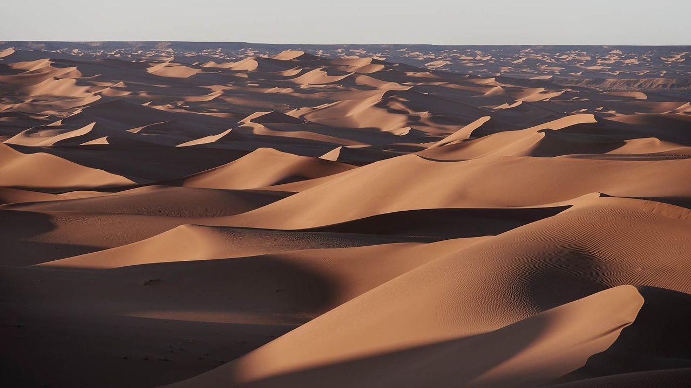
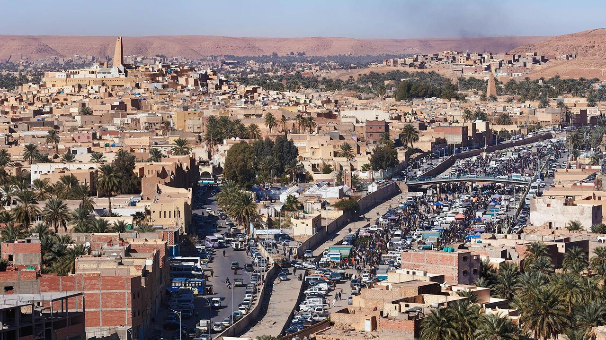
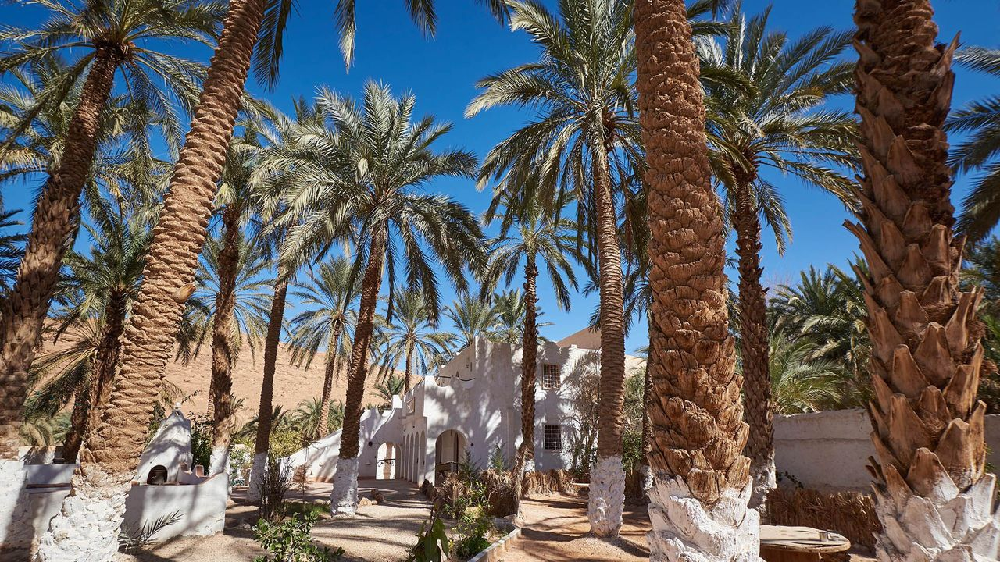
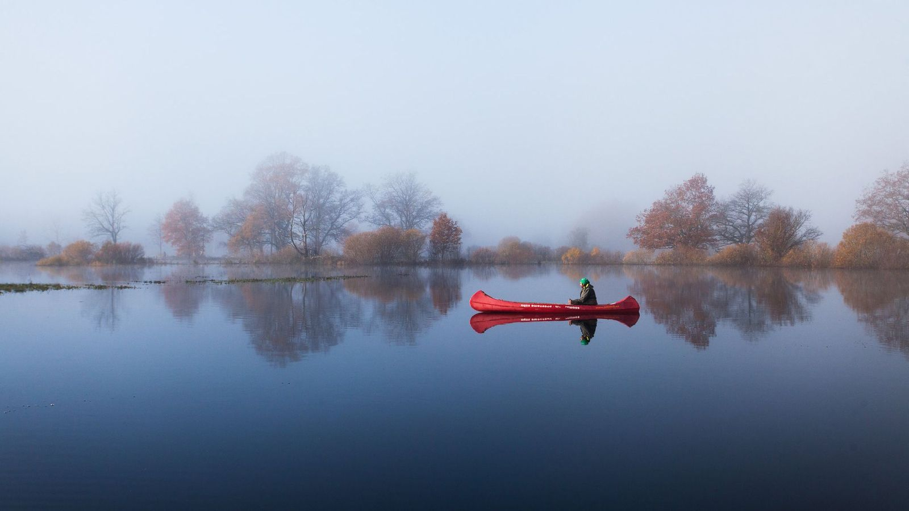

Stretching between Morocco and Tunisia and facing Europe across the Mediterranean, Algeria is Africa's largest nation and the 10th largest in the world. Its vast and varied landscape of soaring mountain ranges, blistering deserts and ancient Roman ruins covers nearly 2.4 million sq km – 10 times the size of the UK. Much of the country – around four-fifths – is consumed by the Sahara, the largest hot desert in the world and a startling, barren wilderness of volcanic massifs, gravel plains and great ergs, or shifting "sand seas". One of the largest of these is the Grand Erg Occidental (pictured), whose seemingly endless expanse of windswept sand dunes covers an area twice the size of Belgium. (Credit: Simon Urwin)
While few Algerians live in such hostile terrain, a chain of extraordinary hilltop settlements exist on the northern fringes of the Sahara: the five historic ksours, or fortified cities, of the M'Zab Valley. Collectively known as the Pentapolis, these magnificent, centuries-old citadels were built along the Wadi Mzab, a partially dry riverbed whose waters rise just once every three to five years. The towns include El-Atteuf, the oldest, founded in 1012; Melika; Bounoura; the Holy City of Beni-Isguen; and Ghardaïa (pictured), the principal settlement and commercial heart of the valley. In 1982, the M'Zab was classified as a Unesco World Heritage site due to its highly distinctive culture and architecture. "What makes the place so special is the unique combination of [the indigenous people of North Africa] with Ibadi Islamic beliefs who built fortress homes in the middle of the desert," said local guide Khaled Meghnine. "There's nowhere like it in Algeria, nor the rest of the world." (Credit: Simon Urwin)
In Beni-Isguen, where there are no hotels, restaurants or coffee shops, simple tourist facilities have sprung up in its nearby palm grove. "The M'Zab is not a resort. It's a real place, full of real people," said Salah Daoud, the manager of a homestay (pictured). "Staying with a family offers an authentic, immersive experience of the valley. The food is homemade: a local lady makes our couscous and we buy camel meat from the [local] butcher, so the experience also includes the wider community." There are now some 30 such homestays across the M'Zab, with tight limits on tourist numbers. "There's a clear understanding here of the difference between mass tourism and sustainable tourism with a conscience," said Daoud. "We are focused on the latter. The last thing we want is to be overwhelmed with tour buses and the M'Zab turned into a human zoo." (Credit: Simon Urwin)
Every morning in the lead up to spring, Aivar Ruukel looks outside his bedroom window to see if his favourite season has arrived. If he is in luck, and the weather is right, he has a quick breakfast, grabs a life jacket and paddle from the store and quickly rushes outside to pull his haabjas, or traditional dug-out canoe, up to the water’s edge. From his vantage point in the craft, a web of routes emerges into view and Ruukel paddles deep into the flooded woodland, entering a half-drowned world of swamped meadows and watery channels. Dawn is the best time to experience the delta, and to jump into his canoe at first light is to see this vast area of spongy mires and paludified forests anew.
I remember my father bringing me here when I was just a child and I’ll never forget it,” Ruukel said, peering ahead into the waterlogged forests. “The woodpeckers knock-knocking in the trees. The flowers poking above the water. The sounds and smells of the new season arriving. Bliss.” In most places, a weather forecast that predicts heavy rain is a bad day, while a forecast that reports dangerous flash floods is one that no-one wants to hear. Except, that is, if you are a guide like Ruukel and you live in Soomaa National Park, a peatland in south-western Estonia notorious for annual deluges that can be as alarming as 8km wide and 5m high.
Simply put, this is Estonia’s so-called “fifth season”, a predictably volatile period of weather that arrives after winter and before spring every year. No-one can pinpoint exactly on which day it’ll arrive, but this annual phenomenon does so without fail between March and April, bringing with it surging floods that recast the national park as a waterlogged basin of submerged houses, sunken apple orchards and raised bog islands. It is the triumph of water over land, and yet also one of humankind’s will over Mother Nature. “Every year brings with it new challenges,” said Ruukel, who is now in his 27th season as a canoe guide in the area. “We need to work out where we can paddle safely when the floods arrive – but there is an inherent risk when we’re navigating such cold, moving water. Care needs to be taken.”